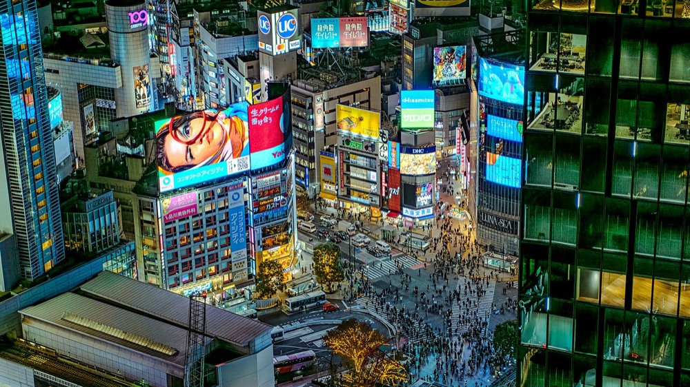

Photo source ↗
Urban Landmark
Already picked
Shibuya
famous scramble crossing and youth shopping hub
Relaxed visit60–90 minutes
Enough for the crossing from two viewpoints, a slow loop through Center-gai, photos, and one snack or shop stop; add time for serious shopping.
Currently scheduled · Day 3, Sun 25 Oct · 17:20–17:40